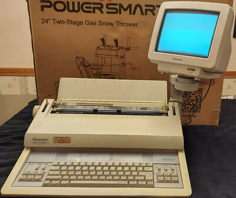

Input/output devices
From punch cards to touchscreens: the tools we use to talk to computers.
An overview of how people and computers interact. Check out the topics!

From punch cards to touchscreens: the tools we use to talk to computers.